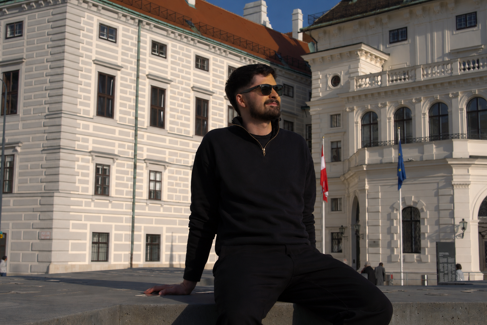

Wien, Österreich
Samuel
Stremnitzer
Digital Business & Process Analyst
Ich verbinde operatives IT-Know-how mit strategischer Prozessgestaltung und Business Intelligence – als lösungsorientiertes Bindeglied zwischen Business und Technik.
Studium
Digital Business
FHWien der WKW
FHWien der WKW
Zertifiziert
Process Analyst
GPM, bis 2029
GPM, bis 2029
Erfahrung
IT & Inventar
Bundesministerium
Bundesministerium
